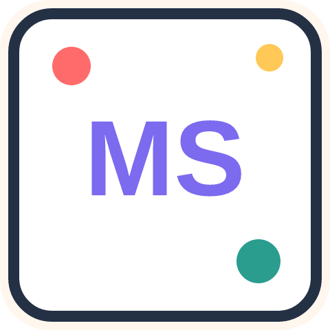

Hello. I like building useful software, and I am still figuring out the fun parts along the way.
I am a Computer Engineering Technology graduate from Algonquin College in Ottawa, Ontario. I am interested in software development, backend programming, web applications, databases, and computer systems.
Experience
Software Development Intern at Stratosfy. I worked with a team of five interns on existing restaurant refrigerator monitoring software. I developed logic to identify potential open-door, power-loss, and overstocking conditions from temperature data, integrated that functionality with the existing server, and worked on customer notifications through email and phone.
Career goal
Build practical software that solves real-world problems. Code, coursework, and project notes live on github.com/Strazci-wq.